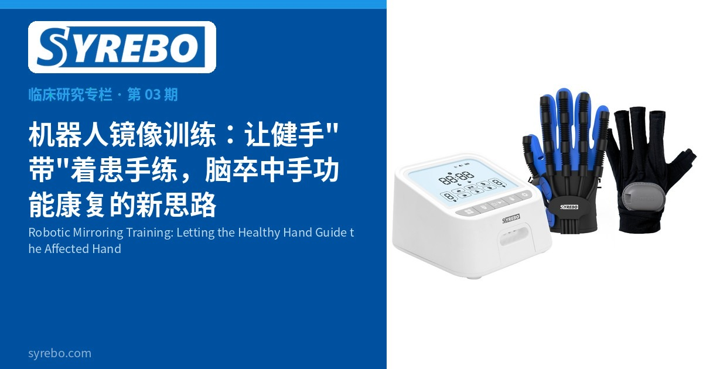

第 03 期
机器人镜像训练：让健手"带"着患手练，脑卒中手功能康复的新思路


Syrebo E12 系列手功能康复手套系统，含控制器、动力手套与镜像手套（官网产品图；本研究设备为 SY-HRE12）
中风后，有些患者不仅手不好使，还会出现单侧忽略——对身体一侧的空间"视而不见"，连带着情绪也受影响。机器人镜像训练的思路是：让健手的动作实时驱动患手同步模仿，在重复练习中同时调动视觉与运动反馈。
研究怎么做的
研究纳入 24 例亚急性期脑卒中患者，随机分为两组，每组 12 例；两组均使用 SYREBO SY-HRE12 软体康复手套。机器人镜像训练组使用设备的镜像功能，另一组使用设备预设的被动运动。每次 30 分钟、每周 3 次、持续 5 周。
结果如何
机器人镜像训练在单侧忽略和抑郁相关结局方面表现更有优势。也就是说，同样一副手套，"镜像着练"比"被动地练"，在注意与情绪相关的恢复上多了一层获益。
样本量 24 例，属小样本研究；对照组为设备预设被动运动，非普通镜像盒。
研究出处：Woo JJ, Kwon JS. Effects of Robotic Mirroring Training and Mirror Therapy with Robot on Unilateral Neglect, Depression, and Activities of Daily Living Among Patients with Subacute Stroke. NeuroRehabilitation, 2025. DOI:
10.1177/10538135251382902（PMID:
41092018）。
温馨提示：康复效果因人而异，具体训练方案请在医生或治疗师指导下制定。